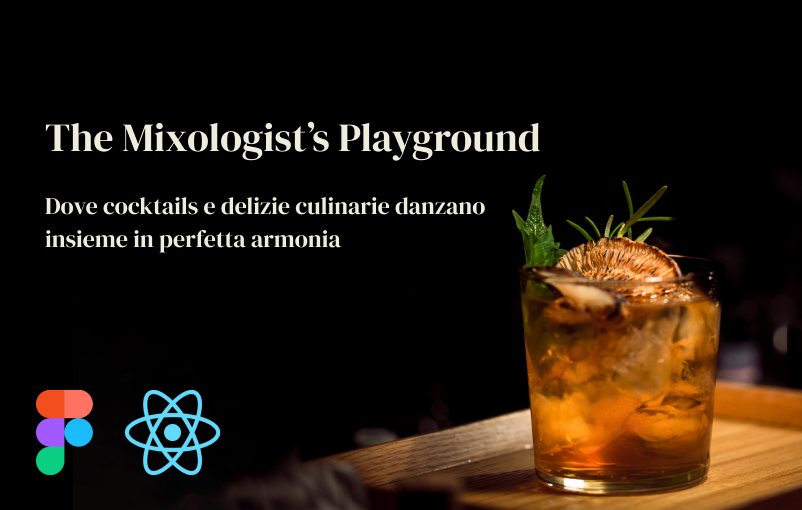

The Mixologist's Playground

The Mixologist's Playground è una web application responsive interamente sviluppata in React.js per gli appassionati di mixology. Il progetto è stato realizzato nell'ambito del corso di Applicazioni Web: Progettazione e Sviluppo presso l'Università degli Studi di Milano-Bicocca.
L'applicazione funge da assistente interattivo per esplorare ricette di cocktail tradizionali e contemporanei, integrando un design moderno e un'esperienza utente fluida. Il sistema gestisce in maniera dinamica la visualizzazione delle informazioni combinando dati provenienti da sorgenti esterne e file di configurazione locali.
Funzionalità Chiave
- Esplorazione e Filtri Avanzati: Consente agli utenti di filtrare l'ampio catalogo di drink in base alla tipologia di bicchiere da portata (es. glass type) o alla categoria del cocktail, semplificando la scoperta di nuove ricette.
- Ricerca in Tempo Reale: Barra di ricerca dinamica per trovare all'istante il proprio drink preferito per nome.
- Schede di Dettaglio Ricetta: Ogni cocktail ha una pagina dedicata in cui vengono decostruiti gli ingredienti con le rispettive dosi e fornite istruzioni chiare e dettagliate per la preparazione.
- Feedback e Recensioni Locale: Sezione recensioni interattiva alimentata da un database JSON locale per mostrare feedback e valutazioni degli utenti sul locale.
- Design Mobile-First: Layout reattivo ottimizzato per garantire una navigazione piacevole sia da smartphone che da desktop.
Stack Tecnologico
Frontend: React.js (con utilizzo di Context
API per lo stato globale della ricerca e Hooks personalizzati
come useFetch), HTML5, CSS3, e Bootstrap per il layout
responsive.
Integrazione API: Collegamento asincrono con
l'API esterna
TheCocktailDB
per il recupero di dati aggiornati in tempo reale.
Deployment: Configurato e ospitato in
produzione su piattaforma Netlify.
È possibile visualizzare il sito live al seguente link.